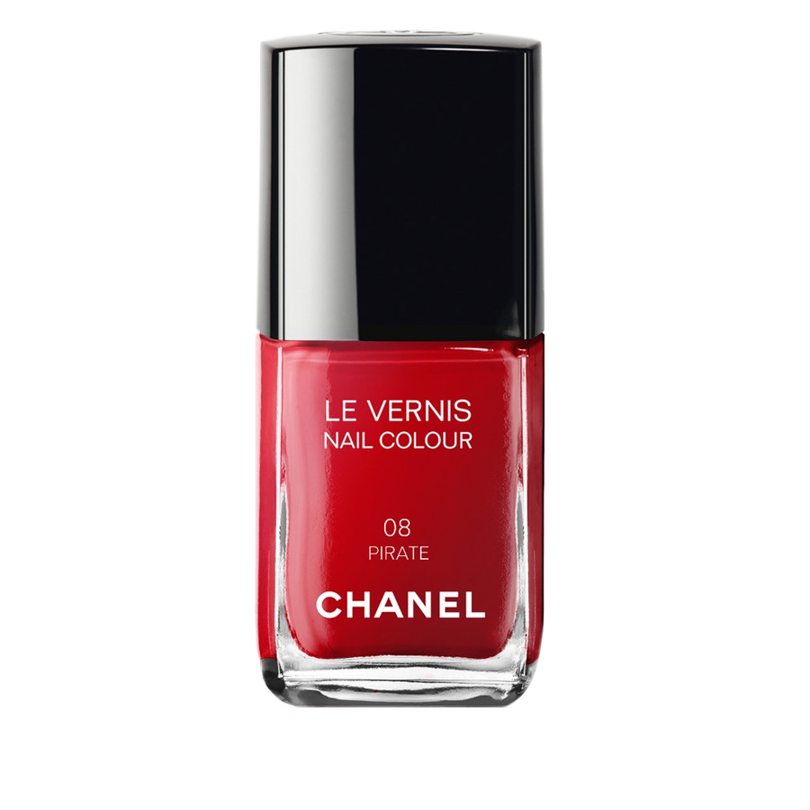

Abstract
In my thesis I examine to what extent graphic design can make written information more attractive and more accessible to people with ADHD.
It is not that people with ADHD are not interested in written content, but reading a substantial text requires quite a bit of concentration, which people with ADHD lack and causes them to see reading as an unattractive task.

In addition, written text is often presented by means of a book, newspaper, or (digital) product consisting solely of text, little hierarchy and hardly any use of color. This increases the unattractiveness of reading and discourages the person with ADHD even further.
As a graphic designer I would like to make reading more enjoyable for people with AHDH by helping them to stay concentrated. In my thesis I will examine how written information can be presented as attractive as possible for people with ADHD.
For this research, I will be studying the available literature on ADHD and graphic design, which will form the base on the experiments I will be conducting. The experiments will be held with people who have ADHD and I will compare the results with people who do no have the disorder. The outcome of the experiments will hopefully enable me to make recommendations on how to present written text as attractive as possible to people with ADHD.
The aim of my thesis is to focus on the abilities of adults with ADHD. I want to emphasize what they can do instead of what they can’t do.